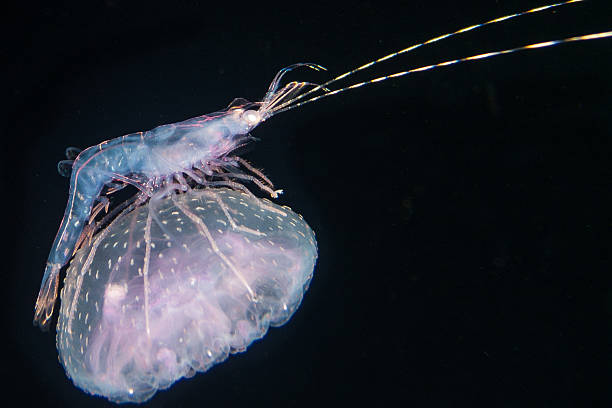
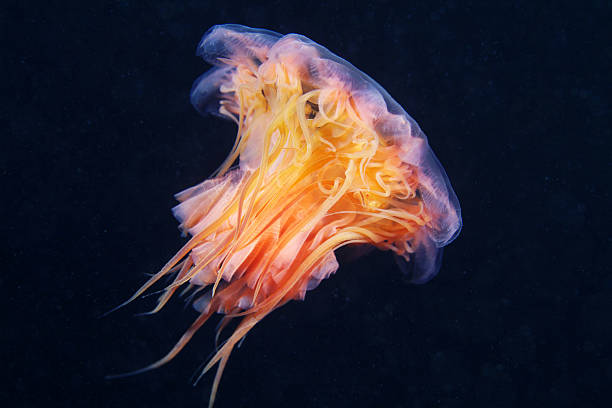

Sustainability Of Life Below
- Prevent and significantly reduce marine pollution of all kinds
- Sustainably manage and protect marine to avoid significant adverse impacts, including by strengthening their resilience, and take action for their restoration in order to achieve healthy and productive oceans.
- Minimize and address the impacts of ocean acidification, including through enhanced scientific cooperation at all levels.
- Effectively regulate harvesting and end overfishing, in order to restore fish stocks in the shortest time feasible.
- Conserve at least 10 per cent of coastal and marine areas, consistent with national and international law and based on the best available scientific information.
- Prohibit certain forms of fisheries subsidies which contribute to overcapacity and overfishing.
- Increase the economic benefits to small island developing States and least developed countries from the sustainable use of marine resources, including through sustainable management of fisheries.
- Develop research capacity and transfer marine technology, develop research capacity and transfer marine technology.

Image of a Hitchhiker.

Image of a Lion's Mane Jellyfish.

Fishes near coral.